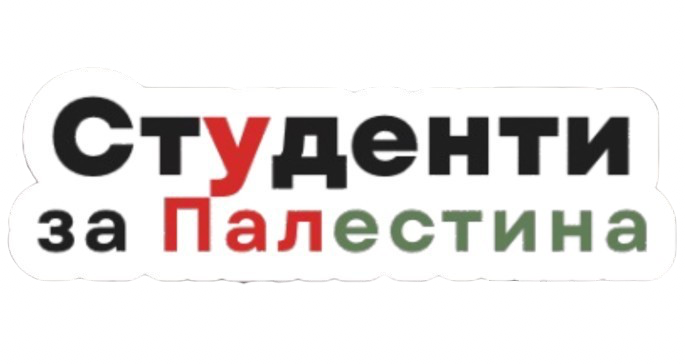

Студенти за Палестина - България
Група студенти, които отказват да останат безучастни към геноцида в Палестина.
Канали за комуникация:
Телеграм
Инстаграм
Фейсбук
Акции:
Петиция
Списък с каузи, които подкрепяме:
Медицински проект “Heal Gaza Wounds”
Семейството на Хана'а
Семейството на Сирин Добрева в Газа
Семейството на Невин
Семейството на Асмаа
Семейството на Осама